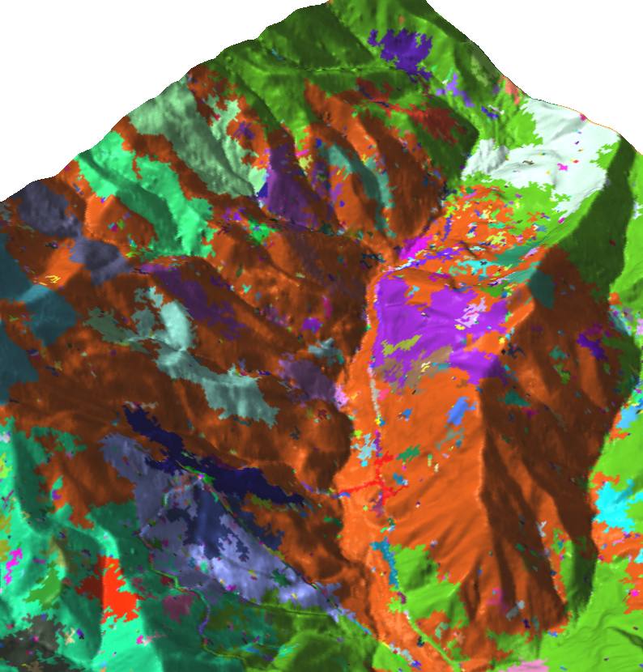

Processing lidar and general point cloud data in GRASS GIS
-
Processing UAV and lidar point clouds in GRASS GIS
- XXIII ISPRS Congress
in Prague, Czech Republic, July 12-19, 2016
- versions:
4×3,
16×9
- Paper in ISPRS Archives:
-
Petras, V., Petrasova, A., Jeziorska, J., Mitasova, H.:
Processing UAV and lidar point clouds in GRASS GIS,
ISPRS - International Archives of the Photogrammetry,
Remote Sensing and Spatial Information Sciences XLI-B7,
945–952, 2016
-
ISPRS Archives,
BibTeX,
ResearchGate (full-text)
- Please, use it to cite this work.
-
GRASS GIS loves lidar
-
Efficient processing of dense point clouds in GRASS GIS
-
New lidar processing functionality in GRASS GIS 7.1
- Presentation for U.S. Fish and Wildlife Service Remote Sensing Technical Group meeting
-
Processing lidar and general point cloud data in GRASS GIS
Contact me at wenzeslaus gmail com.
Slides are in PDF and were created in LaTeX using the Beamer class.
Source code hosted on
GitHub.
